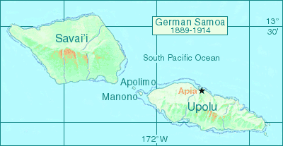

The islands of Somoa were once part of one country
spread across several hundred kilometers of ocean.
That came to an end in the year 1889 when Samoa was divided into two parts: the Germans took
control of the western half of the Samoa islands while the United States took control of eastern half.
Germany’s interest was commercial, the export of copra and cocoa.
Some German plantations were already on the islands.
The Americans favored the eastern islands of Samoa because of the harbor in Tutuila.
German Samoa and American Samoa were thus created. German Samoa comprised of the four islands,
Savaii, Upolu, Apolimo, and Manono.
New Zealand Expeditionary Forces landing on August 29, 1914 and ended German control.
In 1920 the islands were placed under New Zealand civil control. New Zealand
continued to administer the islands as a mandate and then as a trust territory until 1962, when the islands
became the first Polynesian nation to reestablish independence in the 20th century. The country
dropped the “Western” from its name in 1997.
